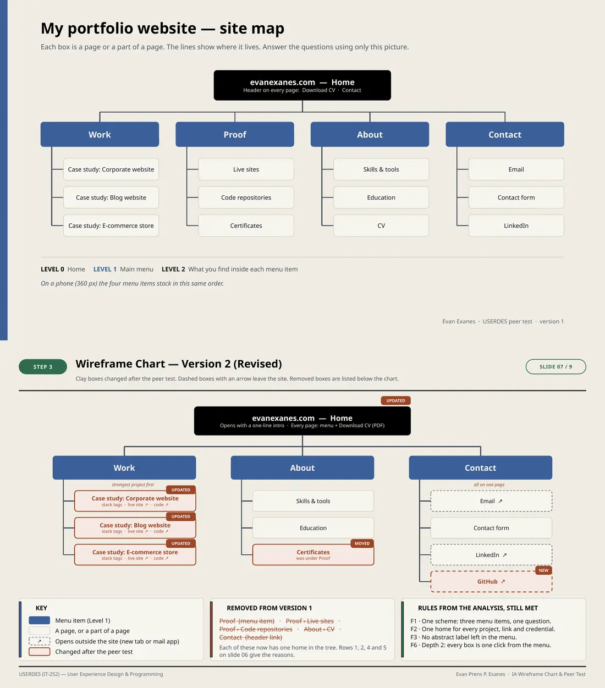

The activity said: make a wireframe chart from the earlier analysis, have three classmates test it, then revise. My chart was a site map tree of my portfolio: Home, four sections, and the content under each. I ran the test over chat. Each classmate got the chart image, four find-it tasks and four critique questions.
Two weak spots, left in on purpose
Version 1 kept two known problems: an abstract section label, "Proof", and live links with two homes. All three testers raised "Proof". A flaw the testers find carries more weight in a revision log than the same flaw fixed in advance.
Task success is not confidence
One tester completed the find-it tasks 4 out of 4, yet rated ease 3 out of 5 because separating Work from its links in Proof "forces double-checking and unnecessary clicks". Two of the three skipped the four path tasks and wrote free-form critiques instead. I reported those as not answered, not as failures, and named the smaller sample as a limit.
Thirteen critiques, ten adopted, three declined
Every distinct critique got its own row. The three I declined each had a reason: content that does not exist yet (Testimonials, Blog), notation the chart already used (a T-bar trunk), and a suggestion that another change made unnecessary (header cross-links).
Remove, do not rename
Renaming "Proof" would still have split every project across two menu items. Removing it gave each item one home. Chart version 2 lists the removed boxes struck through under the tree, so the before and after can be read without flipping back.
Open both chart versions
